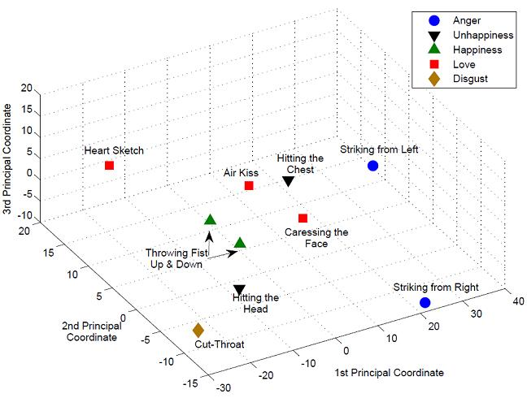

|
H. Hajimirsadeghi, G.T. Zhou, A. Brownsword, N. Agarwal, P. Chandrashekar, K. Rashedi Nia, "Context-aware feature embedding and anomaly detection of sequential log data using deep recurrent neural networks", U.S. Patent Application No. 16/122,505, 2020. [here] |
| |
G.T. Zhou, H. Hajimirsadeghi, A. Brownsword, S. Wray, C. Schelp, R. Reddekopp, F. Schmidt, "Malicious activity detection by cross-trace analysis and deep learning", U.S. Patent Application No. 16/122,398, 2020. [here] |
| |
L. Chen, J. Chen, H. Hajimirsadeghi, and G. Mori, "Adapting Grad-CAM for Embedding Networks", Winter Conference on Applications of Computer Vision (WACV), 2020. [pdf] |
| |
S. Su, H. Hajimirsadeghi, and G. Mori, "Graph Generation with Variational Recurrent Neural Network", NeurIPS 2019 Graph Representation Learning Workshop, 2019. [pdf] |
| |
Y. Gong, H. Hajimirsadeghi, J. He, M. Nawhal, T. Durand, and G. Mori, "Variational Selective Autoencoder", 2nd Symposium on Advances in Approximate Bayesian Inference, 2019. [pdf] |
| |
H. Hajimirsadeghi and G. Mori, "Multi-Instance Classification by Max-Margin Training of Cardinality-Based Markov Networks", IEEE Transactions on Pattern Analysis and Machine Intelligence (TPAMI), 2017. [pdf] |
| |
H. Hajimirsadeghi and G. Mori, "Joint Kernel Learning and Multi-Instance Classification", 2016. [pdf] |
| |
H. Hajimirsadeghi, "Multiple instance learning for visual recognition: Learning latent probabilistic models", Ph.D. Thesis, Simon Fraser University, 2015. [pdf] |
| |
H. Hajimirsadeghi and G. Mori, "Learning Ensembles of Potential Functions for Structured Prediction with Latent Variables", IEEE International Conference on Computer Vision (ICCV), Dec. 2015. [pdf] [supplementary] |
| |
H. Hajimirsadeghi, W. Yan, A. Vahdat, and G. Mori, "Visual Recognition by Counting Instances: A Multi-Instance Cardinality Potential Kernel", Proc. IEEE Computer Vision and Pattern Recognition (CVPR), pp. 2596-2605, June 2015. [pdf] [supplementary] |
 |
M. Khodabandeh, A. Vahdat, G.-T. Zhou, H. Hajimirsadeghi, M. Roshtkhari, G. Mori, and S. Se, "Discovering Human Interactions in Videos with Limited Data Labeling", Workshop on Group and Crowd Behavior Analysis and Understanding (at CVPR), June 2015. [pdf] |
| |
A. Madooei, M. S. Drew, and H. Hajimirsadeghi, "Learning to Detect Blue-white Structures in Dermoscopy Images with Weak Supervision", arXiv preprint arXiv:1506.09179. To appear in IEEE Journal of Biomedical and Health Informatics. [pdf] |
| |
J. Li, H. Hajimirsadeghi, M. Zaki, G. Mori, and T. Sayed, "Computer Vision Techniques to Collect Helmet-Wearing Data on Cyclists", Journal of the Transportation Research Board, vol. 2468, 2014. [pdf] |
| |
J. Li, H. Hajimirsadeghi, M. Zaki, G. Mori, and T. Sayed, "Cyclist's Helmet Recognition Using Computer Vision Techniques", Proc. 93rd Transportation Research Board (TRB) Annual Meeting, Washington DC, January 2014. [pdf] |
| |
H. Hajimirsadeghi, J. Li, G. Mori, M. Zaki, and T. Sayed, "Multiple Instance Learning by Discriminative Training of Markov Networks", Proc. 29th Conference on Uncertainty in Artificial Intelligence (UAI), pp. 262-271, July 2013. [pdf] |
 |
Sangmin Oh, Scott McCloskey, Ilseo Kim, Arash Vahdat, Kevin Cannons, Hossein Hajimirsadeghi, Greg Mori, Amitha A.G. Perera, Megha Pandey, and Jason Corso, "Multimedia Event Detection with Multimodal Feature Fusion and Temporal Concept Localization", Machine Vision and Applications (MVA), vol. 25, no. 1, pp. 49-69, 2014. [pdf] |
| |
H. Hajimirsadeghi, M. Nili Ahmadabadi, and B. Nadjar Araabi, "Conceptual imitation Learning based on perceptual and functional characteristics of action", IEEE Transactions on Autonomous Mental Development, vol.5, no.4, pp. 311-325, 2013. [pdf] |
| |
S. Oh et al., "TRECVID 2012 GENIE: Multimedia Event Detection and Recounting", NIST TRECVID Workshop, 2013. [pdf] |
| |
H. Hajimirsadeghi and G. Mori, "Multiple Instance Real Boosting with Aggregation Functions", IAPR International Conference on Pattern Recognition, ICPR 2012, Japan, pp. 2706-2710, Nov. 2012. [pdf] [slides] |
| |
A. Perera et al., "TRECVID 2012 GENIE: Multimedia Event Detection and Recounting", NIST TRECVID Workshop, 2012. [pdf] |
| |
H. Hajimirsadeghi, M. Nili Ahmadabadi, B. Nadjar Araabi, H. Moradi, "Conceptual imitation learning in a human-robot interaction paradigm", ACM Transactions on Intelligent Systems and Technology, vol. 3, no. 2, 2012. [pdf] |
| |
A. Nikoofard, H. Hajimirsadeghi, A. Rahimi-Kian, C. Lucas, "Multi-objective Invasive Weed Optimization: Application to Analysis of Pareto Improvement Models in Electricity Markets", Applied Soft Computing, vol. 12, no. 1, pp. 100-112, 2012. [pdf] |
|  |
H. Hajimirsadeghi, "Conceptual Imitation Learning based on functional effects of action", Proc. EUROCON 2011, Lisbon, Portugal, April 2011. (Selected as one of the five best papers in IEEE R8 Student Paper Contest 2011) [pdf] [slides] |
| |
H. Hajimirsadeghi, M. Nili Ahmadabadi, M. Ajallooeian, B. Nadjar Araabi, H. Moradi, "Conceptual Imitation Learning: Application to Human-Robot Interaction". Journal of Machine Learning Research: Workshop and Conference Proceedings, vol. 13, pp. 341-356, ACML2010, Tokyo, Japan, Nov. 2010. [pdf] [slides] |
| |
M. Ramezani Ghalenoei, H. Hajimirsadeghi, C. Lucas, "Discrete invasive weed optimization algorithm: Application to cooperative multiple task assignment of UAVs",
Proc. 48th IEEE Conference on Decision and Control, Shanghai, China, pp. 1665-1670, Dec. 2009. [pdf] |
| |
H. Hajimirsadeghi, A. Ghazanfari, A. Rahimi-Kian, C. Lucas, "Cooperative coevolutionary invasive weed optimization and its application to Nash equilibrium search", Proc. World Congress on Nature and Biologically Inspired Computing, Coimbatore, India, pp. 1532-1535, Dec. 2009. [pdf] [poster] |
| |
H. Hajimirsadeghi, C. Lucas, "A hybrid IWO/PSO algorithm for fast and global optimization", Proc. EUROCON 2009, St. Petersburg, RUSSIA, pp. 1964-1971, May 2009. (Selected as one of the five best papers in IEEE R8 student paper contest 2009) [pdf] [slides] |
| |
S. Sodagari, H. Hajimirsadeghi, A. Nasiri Avanaki, "Automatic artifact identification in image communication using watermarking and classification algorithms", Proc. International Symposium on Telecommunications (IST08), Tehran, Iran, pp. 725-730, Aug. 2008. [pdf] [slides] |
| |
H. Hajimirsadegh, M. Nabaee, B. Nadjar Araabi, "Ant colony optimization with a genetic restart approach toward global optimization", Advances in Computer Science and Engineering, Springer Berlin Heidelberg, vol. 6, pp. 9-16, 2008. [pdf] [slides] |